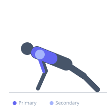
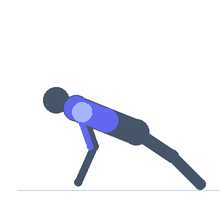

Exercise guide / Plyometric Push-Up
Plyometric Push-Up
The plyometric push-up is an explosive upper body press variation in which the athlete pushes off with enough force to leave the ground, optionally clapping between repetitions. It trains the stretch-shortening cycle of the pectoral muscles and triceps, developing explosive upper body pushing power. The exercise is a staple of athletic conditioning programs targeting sport-specific upper body force production.
Primary muscles
pectoralis major sternal
triceps long head
Secondary muscles
deltoid anterior
pectoralis major clavicular
Stabilizers
transverse abdominis
rectus abdominis
Equipment
No Equipment (Bodyweight)


Starting position
- Begin in a standard push-up position — hands slightly wider than shoulder-width, body in a straight line from head to heels.
Setup
- No equipment required. Ensure adequate floor space and a non-slip surface.
Steps
- Step 1: Begin in push-up position with the body in a straight plank line.
- Step 2: Lower the chest to the floor under control.
- Step 3: Press explosively with maximum effort — drive the hands into the floor to generate enough force to lift the hands off the ground.
- Step 4: Optionally clap while airborne, then catch the fall by landing with slightly bent elbows.
- Step 5: Absorb the landing and immediately lower into the next repetition.
Coaching cues
- Push the floor away as hard as possible
- Tight core throughout — no hip sag
- Catch soft — bend the elbows on landing
Breathing
- Inhale on the descent. Exhale sharply and forcefully at the moment of push-off.
Range of motion
- Full push-up depth — chest to floor or near it. Full extension (hands off ground) at top.
Tempo
- Maximum effort on each rep. 5–10 reps per set for power. Rest fully between sets.
Common mistakes
- Letting the hips sag — the body must remain rigid throughout
- Insufficient pressing force — the hands must fully leave the ground
- Catching with locked elbows — this places severe strain on the elbow joint
Safety
- Master standard push-ups before attempting plyometric variations.
- Land with soft elbows, never locked out.
Training
- power: 3–8 reps
- power: 3–5 sets
- Rest: {'power': 120}